Click on the image which your specimen most closely resembles.


-
Choice 1 of 8
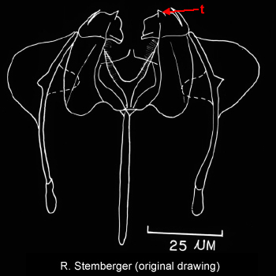
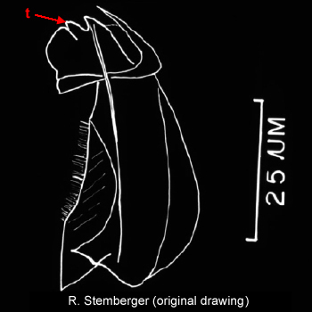
Inner margin of uncus with single rounded tooth (t). Species: Synchaeta asymmetrica -
Choice 2 of 8
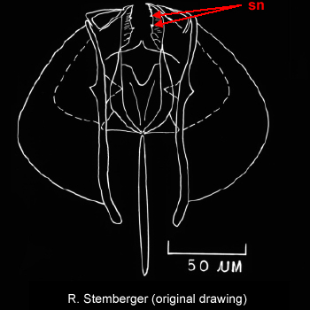
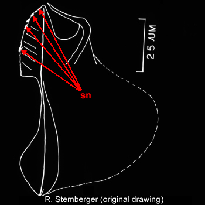
Inner margin of uncus with small nodules (sn). Species: Synchaeta grandis -
Choice 3 of 8
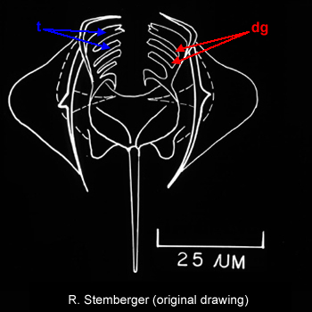
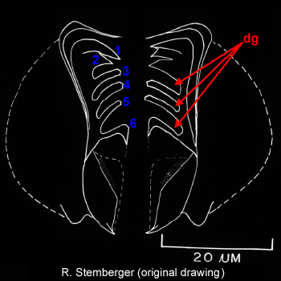
Uncus highly elongate and curved, with 6 or 7 teeth (t) and 3 or 4 deep grooves (dg). Species: Synchaeta kitina -
Choice 4 of 8
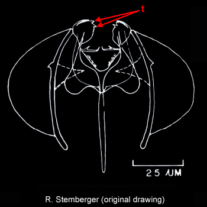
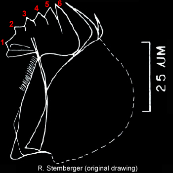
Uncus with 6 or 7 teeth (t) without deep indentations between teeth. Species: Synchaeta lakowitziana -
Choice 5 of 8
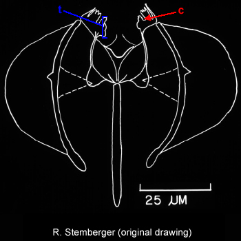
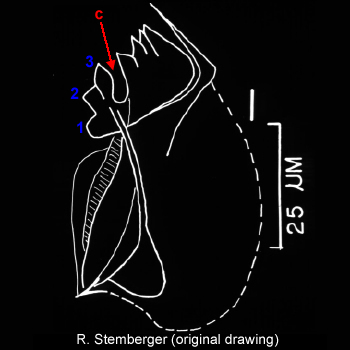
Uncus divided into two parts by a medial cleft (c) with three teeth (t) in posterior portion. Species: Synchaeta oblonga -
Choice 6 of 8
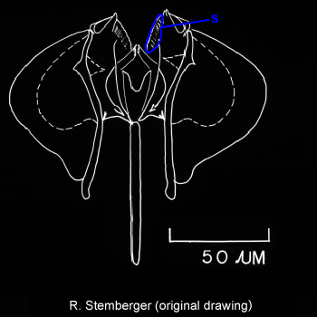
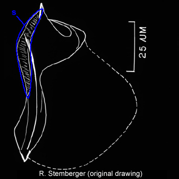
Inner margin of uncus with fine striations (s). Species: Synchaeta pectinata -
Choice 7 of 8
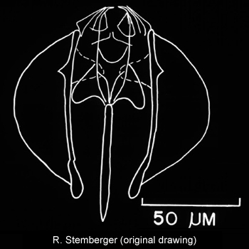
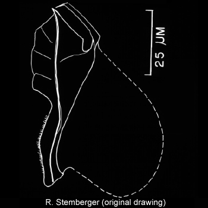
Inner margin of uncus without striations or separated teeth. Species: Synchaeta stylata -
Choice 8 of 8
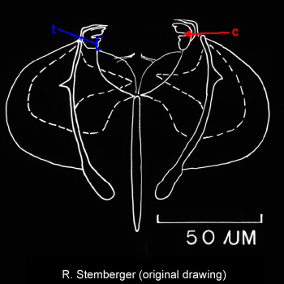
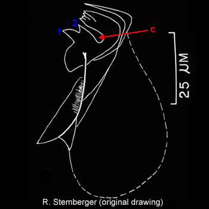
Uncus divided into two parts by a medial cleft (c) with two defined teeth (t) on rounded posterior portion. Species: Synchaeta tremula
Taxonomy
- Phylum
- Rotifera
- Class
- Monogononta
- Order
- Ploima
- Family
- Synchaetidae
- Genus
- Synchaeta